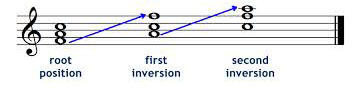

Just like athletes, msucians also need to warm up. So take 5 minutes to stretch your fingers and get them moving. Once you feel warmed up, scroll down to the next section to get shedding!
Warm Up
Scales
Goals: Play through these scales ascending and descending. Start slow and gradually increase the tempo. Scroll down to get to the next section.
- C Major Scale
- C Minor Scale
- C Blues Scale


Triads
Triads are the building blocks to playing cool songs like My Sharona, I Wanna Hold Your Hand, and the snowman song from Frozen. Practice these triad inversions so you can move around the keyboard fluidly. Goals: Play through these triad inversions starting at the bottom of the piano and moving up to the top. Scroll down to get to the next section.
- C Triad Inversions
- F Triad Inversions 
- C Blues Scale

Musical Example
You have the tools you need to start jamming, so check out 'The Best Song Ever' by One Direction. Make sure to move as few fingers as possible when switching chords.
- "The Best Song Ever - One Direction"